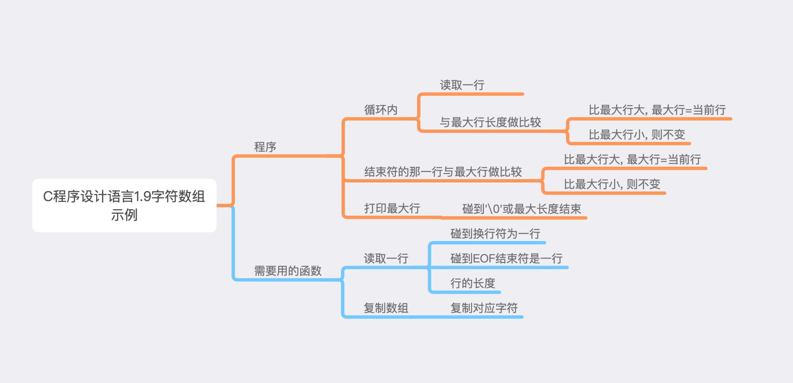

1. 要求: 程序读入一组文本行, 并把最长的文本行打印出来.
2. 分析.
-
要做什么, 读取一行, 与最长行比较, 保存最长行, 读取完, 比较完了, 打印最长行.
-
读取一行, 碰到换行符或EOF结束符是一行, 能读取的最大长度也是一行, 记录行的长度.
-
循环内当前行长度与最大行长度比较, 当前行比最大行长, 最大行=当前行, 否则不变.
-
循环结束后, 结束行与最大行比较, 结束行长度>最大行, 最大行=结束行.
-
打印最大行.

3. 代码.
1. 为了结束循环, 结束行的长度返回负数. 负数比较时需要转为正数.
2. int数组中’\0’表示结束, 这个特殊需要记下.
#include<stdio.h>
#include<stdlib.h>
#define MAXLINE 1000
int getLine(char line[], int maxline);
void copy(char to[], char from[], int maxline);
int main(){
int index;
int len;
int max;
max = 0;
char line[MAXLINE];
char maxlong[MAXLINE];
while((len=getLine(line, MAXLINE)) > 0){
if(len > max){
max = len;
copy(maxlong, line, MAXLINE);
}
}
if(len<0){
if(abs(len) > max){
copy(maxlong, line, MAXLINE);
}
}
for(index=0;maxlong[index] != '\0' && index < MAXLINE; index++){
printf("%c", maxlong[index]);
if(index == MAXLINE - 1){
printf("test");
}
}
return 0;
}
int getLine(char line[], int maxline){
int input, i;
i = 0;
while((input=getchar()) != EOF && input != '\n' && i<maxline){
line[i] = input;
++i;
}
if(i <= maxline -1){
line[i] = '\0';
}
if(input == EOF){
return -i;
}else{
return i;
}
}
void copy(char to[], char from[], int max){
int i;
for(i=0; i<max ;i++){
to[i] = from[i];
}
}